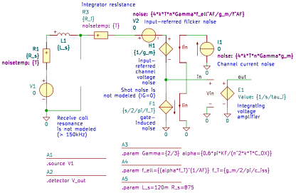
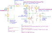
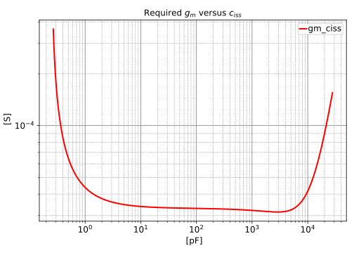

"A1_controller_noise_ciss_gm"
.lib C18.lib
.source V1
.detector V_out
.param Gamma={2/3} alpha={0.6*pi*KF/(n^2*k*T*C_OX)}
.param f_ell={(alpha*f_T)^(1/AF)} f_T={g_m/2/pi/c_iss}
.param L_s=120m R_s=875
E1 out 0 in 0 E value={1/s/tau_i}
V3 1 0 V value=0 noise=0 dc=0 dcvar=0
F1 in 0 V3 F value={s/2/pi/f_T}
V4 2 1 V value=0 noise=0 dc=0 dcvar=0
H1 3 in V4 H value={1/g_m}
I1 0 2 I value=0 noise={4*k*T*n*Gamma*g_m} dc=0 dcvar=0
L1 4 5 L value={L_s} iinit=0
R1 4 6 R value={R_s} noisetemp={T} noiseflow=0 dcvar=0 dcvarlot=0
R3 5 7 R value={R_i} noisetemp={T} noiseflow=0 dcvar=0 dcvarlot=0
V1 6 0 V value=0 noise=0 dc=0 dcvar=0
V2 7 3 V value=0 noise={4*k*T*n*Gamma*f_ell^AF/g_m/f^AF} dc=0 dcvar=0
.end
| RefDes | Nodes | Refs | Model | Param | Symbolic | Numeric |
|---|---|---|---|---|---|---|
| E1 | out 0 in 0 | E | value | $\frac{1}{s \tau_{i}}$ | $\frac{1}{s \tau_{i}}$ | |
| F1 | in 0 | V3 | F | value | $\frac{0.5 s}{\pi f_{T}}$ | $\frac{c_{iss} s}{g_{m}}$ |
| H1 | 3 in | V4 | H | value | $\frac{1}{g_{m}}$ | $\frac{1}{g_{m}}$ |
| I1 | 0 2 | I | value | $0$ | $0$ | |
| noise | $4 \Gamma T g_{m} k n$ | $1.105 \cdot 10^{-20} g_{m} n$ | ||||
| dc | $0$ | $0$ | ||||
| dcvar | $0$ | $0$ | ||||
| L1 | 4 5 | L | value | $L_{s}$ | $0.12$ | |
| iinit | $0$ | $0$ | ||||
| R1 | 4 6 | R | value | $R_{s}$ | $875$ | |
| noisetemp | $T$ | $300$ | ||||
| noiseflow | $0$ | $0$ | ||||
| dcvar | $0$ | $0$ | ||||
| dcvarlot | $0$ | $0$ | ||||
| R3 | 5 7 | R | value | $R_{i}$ | $R_{i}$ | |
| noisetemp | $T$ | $300$ | ||||
| noiseflow | $0$ | $0$ | ||||
| dcvar | $0$ | $0$ | ||||
| dcvarlot | $0$ | $0$ | ||||
| V1 | 6 0 | V | value | $0$ | $0$ | |
| noise | $0$ | $0$ | ||||
| dc | $0$ | $0$ | ||||
| dcvar | $0$ | $0$ | ||||
| V2 | 7 3 | V | value | $0$ | $0$ | |
| noise | $\frac{4 \Gamma T f^{- AF} f_{\ell}^{AF} k n}{g_{m}}$ | $\frac{1.105 \cdot 10^{-20} f^{- AF} n \left(\left(\frac{7.243 \cdot 10^{19} KF g_{m}}{C_{OX} c_{iss} n^{2}}\right)^{\frac{1}{AF}}\right)^{AF}}{g_{m}}$ | ||||
| dc | $0$ | $0$ | ||||
| dcvar | $0$ | $0$ | ||||
| V3 | 1 0 | V | value | $0$ | $0$ | |
| noise | $0$ | $0$ | ||||
| dc | $0$ | $0$ | ||||
| dcvar | $0$ | $0$ | ||||
| V4 | 2 1 | V | value | $0$ | $0$ | |
| noise | $0$ | $0$ | ||||
| dc | $0$ | $0$ | ||||
| dcvar | $0$ | $0$ |
| Name | Symbolic | Numeric |
|---|---|---|
| $\Gamma$ | $0.6667$ | $0.6667$ |
| $L_{s}$ | $0.12$ | $0.12$ |
| $R_{s}$ | $875$ | $875$ |
| $T$ | $300$ | $300$ |
| $\alpha$ | $\frac{0.6 \pi KF}{C_{OX} T k n^{2}}$ | $\frac{4.551 \cdot 10^{20} KF}{C_{OX} n^{2}}$ |
| $f_{T}$ | $\frac{0.5 g_{m}}{\pi c_{iss}}$ | $\frac{0.1592 g_{m}}{c_{iss}}$ |
| $f_{\ell}$ | $\left(\alpha f_{T}\right)^{\frac{1}{AF}}$ | $\left(\frac{7.243 \cdot 10^{19} KF g_{m}}{C_{OX} c_{iss} n^{2}}\right)^{\frac{1}{AF}}$ |
| $k$ | $13.81\cdot 10^{-24}$ | $13.81\cdot 10^{-24}$ |
| Name |
|---|
| $c_{iss}$ |
| $n$ |
| $g_{m}$ |
| $AF$ |
| $\tau_{i}$ |
| $R_{i}$ |
| $KF$ |
| $C_{OX}$ |

| RefDes | Nodes | Refs | Model | Param | Symbolic | Numeric |
|---|---|---|---|---|---|---|
| E1 | out 0 in 0 | E | value | $\frac{1}{s \tau_{i}}$ | $\frac{6.24 \cdot 10^{4}}{s}$ | |
| F1 | in 0 | V3 | F | value | $\frac{0.5 s}{\pi f_{T}}$ | $\frac{c_{iss} s}{g_{m}}$ |
| H1 | 3 in | V4 | H | value | $\frac{1}{g_{m}}$ | $\frac{1}{g_{m}}$ |
| I1 | 0 2 | I | value | $0$ | $0$ | |
| noise | $4 \Gamma T g_{m} k n$ | $1.105 \cdot 10^{-20} N_{s P18} g_{m}$ | ||||
| dc | $0$ | $0$ | ||||
| dcvar | $0$ | $0$ | ||||
| L1 | 4 5 | L | value | $L_{s}$ | $0.12$ | |
| iinit | $0$ | $0$ | ||||
| R1 | 4 6 | R | value | $R_{s}$ | $875$ | |
| noisetemp | $T$ | $300$ | ||||
| noiseflow | $0$ | $0$ | ||||
| dcvar | $0$ | $0$ | ||||
| dcvarlot | $0$ | $0$ | ||||
| R3 | 5 7 | R | value | $R_{i}$ | $5\cdot 10^{3}$ | |
| noisetemp | $T$ | $300$ | ||||
| noiseflow | $0$ | $0$ | ||||
| dcvar | $0$ | $0$ | ||||
| dcvarlot | $0$ | $0$ | ||||
| V1 | 6 0 | V | value | $0$ | $0$ | |
| noise | $0$ | $0$ | ||||
| dc | $0$ | $0$ | ||||
| dcvar | $0$ | $0$ | ||||
| V2 | 7 3 | V | value | $0$ | $0$ | |
| noise | $\frac{4 \Gamma T f^{- AF} f_{\ell}^{AF} k n}{g_{m}}$ | $\frac{1.105 \cdot 10^{-20} N_{s P18} f^{- AF_{P18}} \left(\left(\frac{7.243 \cdot 10^{19} KF_{P18} g_{m}}{C_{OX P18} N_{s P18}^{2} c_{iss}}\right)^{\frac{1}{AF_{P18}}}\right)^{AF_{P18}}}{g_{m}}$ | ||||
| dc | $0$ | $0$ | ||||
| dcvar | $0$ | $0$ | ||||
| V3 | 1 0 | V | value | $0$ | $0$ | |
| noise | $0$ | $0$ | ||||
| dc | $0$ | $0$ | ||||
| dcvar | $0$ | $0$ | ||||
| V4 | 2 1 | V | value | $0$ | $0$ | |
| noise | $0$ | $0$ | ||||
| dc | $0$ | $0$ | ||||
| dcvar | $0$ | $0$ |
| Name | Symbolic | Numeric |
|---|---|---|
| $AF$ | $AF_{P18}$ | $AF_{P18}$ |
| $C_{OX}$ | $C_{OX P18}$ | $C_{OX P18}$ |
| $C_{i}$ | $2.728\cdot 10^{-9}$ | $2.728\cdot 10^{-9}$ |
| $C_{s}$ | $9.382\cdot 10^{-12}$ | $9.382\cdot 10^{-12}$ |
| $\Gamma$ | $0.6667$ | $0.6667$ |
| $I_{fb}$ | $70.89\cdot 10^{-6}$ | $70.89\cdot 10^{-6}$ |
| $KF$ | $KF_{P18}$ | $KF_{P18}$ |
| $L_{s}$ | $0.12$ | $0.12$ |
| $P_{max}$ | $1000\cdot 10^{-6}$ | $1000\cdot 10^{-6}$ |
| $R_{i}$ | $5\cdot 10^{3}$ | $5\cdot 10^{3}$ |
| $R_{s}$ | $875$ | $875$ |
| $R_{t}$ | $10\cdot 10^{3}$ | $10\cdot 10^{3}$ |
| $Ri_{max}$ | $8.972\cdot 10^{3}$ | $8.972\cdot 10^{3}$ |
| $Ri_{min}$ | $1.620\cdot 10^{3}$ | $1.620\cdot 10^{3}$ |
| $SRCnoise$ | $1.483\cdot 10^{-6}$ | $1.483\cdot 10^{-6}$ |
| $S_{Ri}$ | $14.76\cdot 10^{-12}$ | $14.76\cdot 10^{-12}$ |
| $T$ | $300$ | $300$ |
| $V_{DD}$ | $0.9$ | $0.9$ |
| $V_{onoise}$ | $10.62\cdot 10^{-6}$ | $10.62\cdot 10^{-6}$ |
| $Vi_{ADC}$ | $0.9$ | $0.9$ |
| $Vi_{pp}$ | $0.2932$ | $0.2932$ |
| $\alpha$ | $\frac{0.6 \pi KF}{C_{OX} T k n^{2}}$ | $\frac{4.551 \cdot 10^{20} KF_{P18}}{C_{OX P18} N_{s P18}^{2}}$ |
| $f_{T}$ | $\frac{0.5 g_{m}}{\pi c_{iss}}$ | $\frac{0.1592 g_{m}}{c_{iss}}$ |
| $f_{\ell}$ | $\left(\alpha f_{T}\right)^{\frac{1}{AF}}$ | $\left(\frac{7.243 \cdot 10^{19} KF_{P18} g_{m}}{C_{OX P18} N_{s P18}^{2} c_{iss}}\right)^{\frac{1}{AF_{P18}}}$ |
| $f_{fp}$ | $5\cdot 10^{3}$ | $5\cdot 10^{3}$ |
| $f_{max}$ | $6\cdot 10^{3}$ | $6\cdot 10^{3}$ |
| $f_{min}$ | $600$ | $600$ |
| $k$ | $13.81\cdot 10^{-24}$ | $13.81\cdot 10^{-24}$ |
| $n$ | $N_{s P18}$ | $N_{s P18}$ |
| $n_{Ri}$ | $0.2$ | $0.2$ |
| $n_{Ri obtained}$ | $0.1115$ | $0.1115$ |
| $n_{SRC}$ | $0.01951$ | $0.01951$ |
| $\tau_{i}$ | $16.03\cdot 10^{-6}$ | $16.03\cdot 10^{-6}$ |
| Name |
|---|
| $c_{iss}$ |
| $N_{s P18}$ |
| $C_{OX P18}$ |
| $KF_{P18}$ |
| $g_{m}$ |
| $AF_{P18}$ |
| $f$ |

| symbol | description | value | units | $V_{onoise gmCissP}$ | DIN A weighted RMS output noise with PMOS and selected g_m and c_iss | $9.005\cdot 10^{-6}$ | $\mathrm{V}$ |
|---|
Go to A1_controller_noise_ciss_gm_index
SLiCAP: Symbolic Linear Circuit Analysis Program, Version 4.0.10 © 2009-2025 SLiCAP development team
For documentation, examples, support, updates and courses please visit: analog-electronics.tudelft.nl
Last project update: 2026-02-23 13:01:21